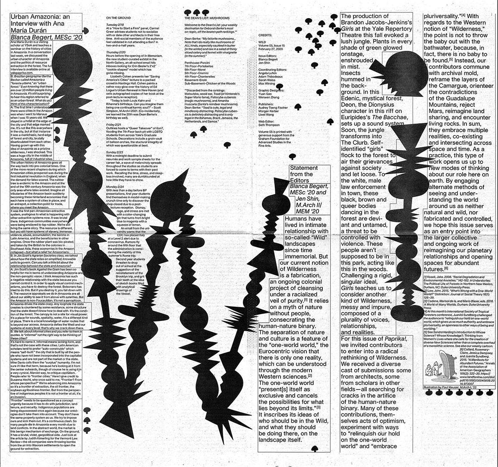

Hello world! This is my personal website. CONTACT: yuan.gao.yg353@yale.edu
Yuan Gao is a graphic designer. In 2019, I graduated from SJTU(上海交通大学), After basic training in the same year I entered Yale School of Art to think why I do graphic deisgn.

 Generally speaking, the graphic designer’s webpage will put whatever award they have won, so I also want to put it out of the worldly mindset. [Tokyo TDC seleced 2019, New York ADC bronze cube 2019, GDC(Graphic design in china)gold prize 2019, Red-dot winner(2017,2018)]
Generally speaking, the graphic designer’s webpage will put whatever award they have won, so I also want to put it out of the worldly mindset. [Tokyo TDC seleced 2019, New York ADC bronze cube 2019, GDC(Graphic design in china)gold prize 2019, Red-dot winner(2017,2018)]

This Poster [Visting artist - Julika!]
is based on Forever, video installation, 2006(Julika), I try to make it funny, collaboration with Wenwen Zhang.
Paprika! -Wild Vol.5 Issue.15
Humans have lived in intimate relationship with so-called “Wild” landscapes since time immemorial. But our current notion of Wilderness is a fabrication, an ongoing colonial project of cleansing under a racialized veil of purity.[1] It relies on a myth of nature without people, consecrating the human-nature binary. The separation of nature and culture is a feature of the “one-world world,” the Eurocentric vision that there is only one reality, which can be understood through the modern Western sciences.[2] The one-world world “present[s] itself as exclusive and cancels the possibilities for what lies beyond its limits.”[3] It inscribes its ideas of who should be in the Wild, and what they should be doing there, on the landscape itself. & For this issue of Paprika!, we invited contributors to enter into a radical rethinking of Wilderness. We received a diverse cast of submissions—some from architects, some from scholars in other fields—all searching for cracks in the artifice of the human-nature binary. Many of these contributions, themselves acts of optimism, experiment with ways to “relinquish our hold on the one-world world” and “embrace pluriversality.”[4] With regards to the Western notion of “Wilderness,” the point is not to throw the baby out with the bathwater, because, in fact, there is no baby to be found.[5] Instead, our contributors commune with archival mold, reframe the layers of the Camargue, orienteer the contradictions of the Guadalupe Mountains, reject Mars, reimagine land sharing, and encounter living rocks. In sum, they embrace multiple realities, co-existing and intersecting across space and time. & As a practice, this type of work opens us up to new modes of thinking about our role here on Earth. By engaging alternate methods of seeing and understanding the world around us as neither natural and wild, nor fabricated and controlled, we hope this issue serves as an entry point into the larger collective and ongoing work of reimagining our planetary relationships and opening spaces for abundant futures.[6]
{[1] Kosek, Jake. 2006. “Racial Degradation and Environmental Anxieties.” 142-182. in Understories: The Political Life of Forests in Northern New Mexico, Durham, NC: Duke University Press.
[2] Law, John. 2015. “What’s Wrong with a One-World World?” Distinktion: Journal of Social Theory 16(1): 126–39.
[3] Cadena, Marisol de la, and Mario Blaser, eds. 2018.
A World of Many Worlds. Durham: Duke University Press.
[4] At this month’s International Society of Tropical Foresters conference, Juanita Sundberg challenged the audience to “relinquish our hold on one-world world, which gives us so much authority, and embrace pluriversality, an openness to other ways of being and worlding.”
[5] See Sandra Harding’s introduction to Whose Science? Whose Knowledge?: Thinking from Women’s Lives where she calls for the creation of diverse New Sciences rather than a complete overhaul of a monolithic science. See also our weekly cartoon.
[6] Collard, Rosemary-Claire, Jessica Dempsey, and Juanita Sundberg. 2015. “A Manifesto for Abundant Futures.” Annals of the Association of American Geographers 105(2): 322–30.}

 Credits:
Issue Editors: Blanca Begert, Jen Shin
/
Coordinating Editors: Angela Lufkin, Adam Thibodeaux, Sarah Weiss, Max Wirsing
/
Graphic Designers: Yuan Gao, Wenwen Zhang
/
Publishers: Audrey Tseng Fischer, Morgan Kerber, Liwei Wang
Credits:
Issue Editors: Blanca Begert, Jen Shin
/
Coordinating Editors: Angela Lufkin, Adam Thibodeaux, Sarah Weiss, Max Wirsing
/
Graphic Designers: Yuan Gao, Wenwen Zhang
/
Publishers: Audrey Tseng Fischer, Morgan Kerber, Liwei Wang
[Art smoker]
is a campaign base project which support smoking in the art school.
{Everyone practices his art in his own way, if he knows the joy that rises like arrows to the astral layers, or that other joy that goes down into the minds of corpse floeers and fertile spasms. Does anyone think he has found apsychic base common to all makind? How can one expect to put order into the chasos that constitutes that infinite and shapeless variation...Man?} - Manifesto, Julian Rosefeldt So I think just smoking if we can do that.
A poster about the [Humanistic spirit]
 , I am willing to be the one who waved the flag.
After about 100 years of the Industrial Revolution, a capitalist market economy has gradually taken shape, and we now have a highly industrial society. As a surfeit of industrialized goods entered the market, corporate identity has emerged as a kind of communication between companies and consumers to help them distinguish among comparable products and services. Attributes of corporate identity serve as shorthand to tell customers what niche their products fill – both what practical needs they address and what values the company promotes through those products. &
If a successful corporate brand needs to assure consumers of quality products and build an emotional connection with them, it falls to graphic designers to create the visual language to communicate this. Ideally, graphic design would serve as a matchmaking force between companies and consumers, helping people find products that fill their practical and emotional needs. In reality, however, graphic designers are frequently subservient to the needs of corporate marketing, which typically is built on false and inflated promises. Sometimes designers genuinely believe in the messages their work sends; other times graphic design deceives, telling the public that this thing is worth doing in your life, or this product is worth buying, although this may not be true. So I think we are fail, the fact is designer can’t defined which things are valuable, and they are also feeling comfusing as human beings. &
Compared with industrial design, graphic design has less role to play. We limited by the productions, some of graphic designer trying to find answers from the art area, it is not a bad way, But I always believe in solving the problem in the most direct method. Graphic designer can use our methods to help people find happiness, Comparing with against society or into the embrace of art forget what we really need to do. Happiness is closely related to humanistic spirit, which is in contradiction with the pure commodity economy. So the emergence of the graphic design attempts to solve such an irreconcilable situation. Sometimes we are a deceiver, we tell the public that this thing is worth doing in your life, or this product is worth buying, although sometimes we are not really sure. Or sometimes we are convinced that what we are doing is right. We are trying to repair the contradiction between the commodity economy and the humanistic spirit, but it has conflicts with more humanistic spirit and other areas that have already formed, especially when technology is integrated into the commodity economy. The medium of communication and commodity transactions has also changed, and many designers are immersed in new media technologies but forget about the problems or human spirit that originally occurred. Or they can indulge in the old media step by step and become a point in the meaningless commodification, ignoring the most problematic problem. Because the era of commoditization will pass in one day and enter the next era, what is our meaning in this era? Will we bring the same problem to the next era. This is a general question for the graphic designers. Sometimes it is hopeless to have such responsibility, how can we coordinate the issues of humanistic spirit and commodity economy? This is a huge and difficult task, And even many graphic designers are unaware of this problem. They have become microphones and tools, and have forgotten the responsibility they should fulfill as human beings. Perhaps such a demand is too harsh, so we should not ask every designer to solve such a problem. Someone must meet the inferior needs in the society. This way of solving the problem is equivalent to abandon the part of humanistic spirit. At the same time, everything is included in the category of the commodity economy, literature, academics, and art, so that all of them are in the service of the commodity economy, but this cannot be equated with the fact that we should really give up the humanistic spirit and completely compromise with the commodity economy. We still need to resolve the confusion which caused by the contradiction between humanistic spirit and the commodity economy, and there is still have beauty and light around them. This is the meaning of why we design and why we live as a human being.
, I am willing to be the one who waved the flag.
After about 100 years of the Industrial Revolution, a capitalist market economy has gradually taken shape, and we now have a highly industrial society. As a surfeit of industrialized goods entered the market, corporate identity has emerged as a kind of communication between companies and consumers to help them distinguish among comparable products and services. Attributes of corporate identity serve as shorthand to tell customers what niche their products fill – both what practical needs they address and what values the company promotes through those products. &
If a successful corporate brand needs to assure consumers of quality products and build an emotional connection with them, it falls to graphic designers to create the visual language to communicate this. Ideally, graphic design would serve as a matchmaking force between companies and consumers, helping people find products that fill their practical and emotional needs. In reality, however, graphic designers are frequently subservient to the needs of corporate marketing, which typically is built on false and inflated promises. Sometimes designers genuinely believe in the messages their work sends; other times graphic design deceives, telling the public that this thing is worth doing in your life, or this product is worth buying, although this may not be true. So I think we are fail, the fact is designer can’t defined which things are valuable, and they are also feeling comfusing as human beings. &
Compared with industrial design, graphic design has less role to play. We limited by the productions, some of graphic designer trying to find answers from the art area, it is not a bad way, But I always believe in solving the problem in the most direct method. Graphic designer can use our methods to help people find happiness, Comparing with against society or into the embrace of art forget what we really need to do. Happiness is closely related to humanistic spirit, which is in contradiction with the pure commodity economy. So the emergence of the graphic design attempts to solve such an irreconcilable situation. Sometimes we are a deceiver, we tell the public that this thing is worth doing in your life, or this product is worth buying, although sometimes we are not really sure. Or sometimes we are convinced that what we are doing is right. We are trying to repair the contradiction between the commodity economy and the humanistic spirit, but it has conflicts with more humanistic spirit and other areas that have already formed, especially when technology is integrated into the commodity economy. The medium of communication and commodity transactions has also changed, and many designers are immersed in new media technologies but forget about the problems or human spirit that originally occurred. Or they can indulge in the old media step by step and become a point in the meaningless commodification, ignoring the most problematic problem. Because the era of commoditization will pass in one day and enter the next era, what is our meaning in this era? Will we bring the same problem to the next era. This is a general question for the graphic designers. Sometimes it is hopeless to have such responsibility, how can we coordinate the issues of humanistic spirit and commodity economy? This is a huge and difficult task, And even many graphic designers are unaware of this problem. They have become microphones and tools, and have forgotten the responsibility they should fulfill as human beings. Perhaps such a demand is too harsh, so we should not ask every designer to solve such a problem. Someone must meet the inferior needs in the society. This way of solving the problem is equivalent to abandon the part of humanistic spirit. At the same time, everything is included in the category of the commodity economy, literature, academics, and art, so that all of them are in the service of the commodity economy, but this cannot be equated with the fact that we should really give up the humanistic spirit and completely compromise with the commodity economy. We still need to resolve the confusion which caused by the contradiction between humanistic spirit and the commodity economy, and there is still have beauty and light around them. This is the meaning of why we design and why we live as a human being.
website! Website!
 website! Website!
This is my initial attempt to derive the design to a web page, and the construction of this web page is also a continuous attempt from the basic HTML language to the CSS language.
website! Website!
This is my initial attempt to derive the design to a web page, and the construction of this web page is also a continuous attempt from the basic HTML language to the CSS language.
[The Mountian]
 Which is a poster made for visting artist Rick Alverson screening the mountian. I watched the moive a lot of times before start the design, the film still make me confusing, I am not confused about what the movie wants to say, but the distant mountains in the mist.
Which is a poster made for visting artist Rick Alverson screening the mountian. I watched the moive a lot of times before start the design, the film still make me confusing, I am not confused about what the movie wants to say, but the distant mountains in the mist.